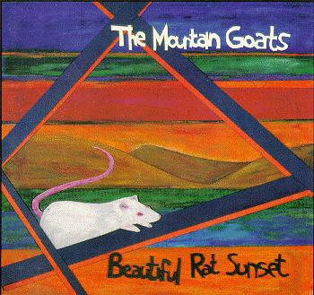

beautiful rat sunset

title: beautiful rat sunset
cool quote:
he could hear the music of the house-curse in the rustling leaves and
feel its rhythms underfoot. the light wind blowing was nice and cool and
up in the foothills he thought he saw a ring-necked pheasant. it was not
a ring-necked pheasant.
agamemnon smiled. it had been a long time since he had felt like
smiling. there was music trilling in the air, and old voices: faint,
uncertain.
chilling and familiar. like a wind chime.
side 1 has four songs and these are their names:
itzcuintli-totzli days
new star song
song for cleomenes [sarah margaret's addendum]
sendero luminoso verdadero
side 2 also has four songs, but their names are different:
song for mark and joel
going to maryland
seeing daylight
resonant bell world
please mail any questions/comments/complaints, or just notes hello to:nall@themountaingoats.net